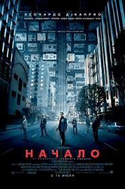
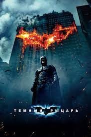
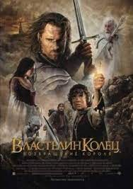
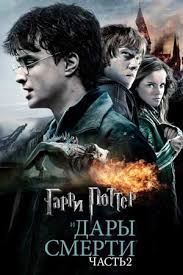

Мы привыкли, что в нашем понимании вор – это человек способный украсть какие-то ценности или деньги. Сюжет картины рассказывает о ворах, способных украсть идею прямо у человека из подсознания. Одним из таких является главный герой фильма Доминик Кобб. После того, как его жена умерла, он вынужден скрываться, и не может даже вернуться в страну, чтобы повидать детей. Как-то раз Кобб получает очень неординарный заказ: ему нужно не украсть, а наоборот внедрить новую идею в подсознание человека..

Всего за несколько дней жизнь в Готэм-сити превратилась в кошмар. Равновесие между криминальным миром с одной стороны, и усилиями Бэтмена, комиссара полиции Джеймса Гордона и нового прокурора Харви Дента по обузданию негодяев с другой, нарушил Джокер. Ограбив банк мафии, тот не только вышел сухим из воды, но и заключил с бандитами сделку – в обмен на уничтожение Бэтмена он получит половину преступных доходов города. Однако цель Джокера – тотальный хаос. Бэтмену придется сражаться не только с безумным клоуном и его бандой, но и с тьмой в сердцах добропорядочных обитателей города..

Кинотрилогия «Властели́н коле́ц» (англ. The Lord of the Rings; 2001—2003) — снятая режиссёром Питером Джексоном серия из трёх связанных единым сюжетом кинофильмов, представляющая собой экранизацию романа Дж. Р. Р. Толкина «Властелин колец».
